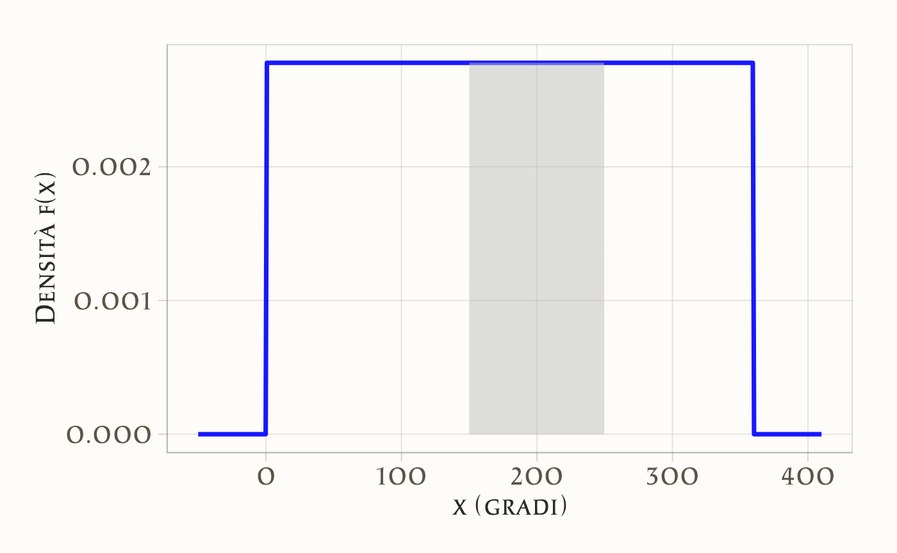
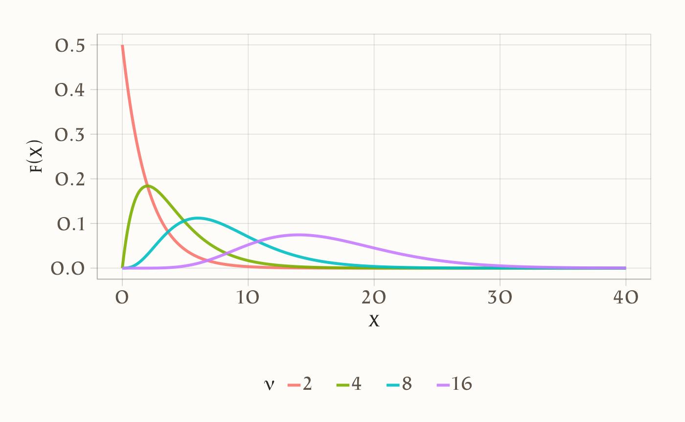
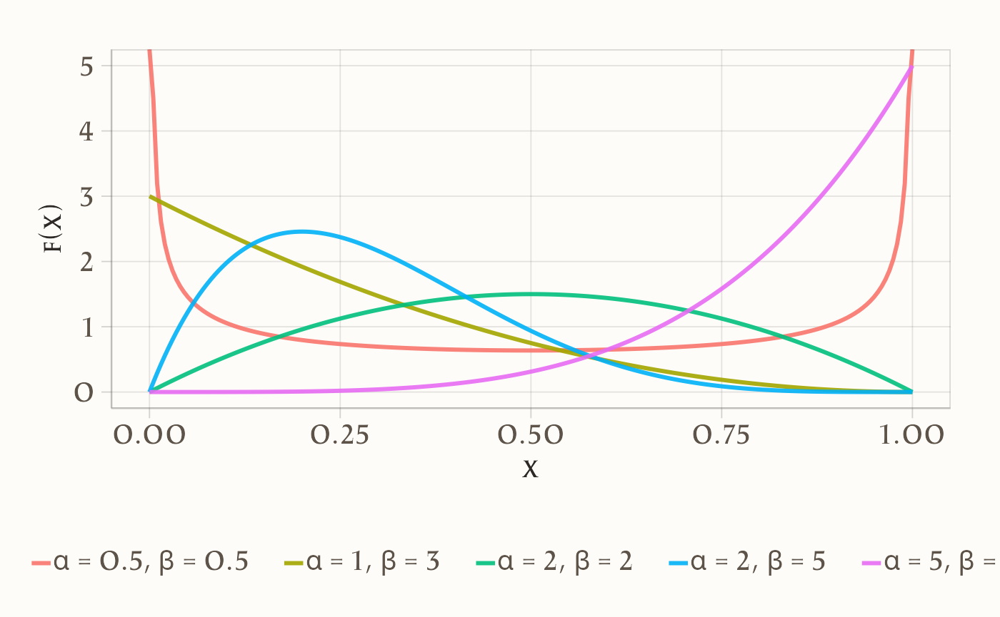
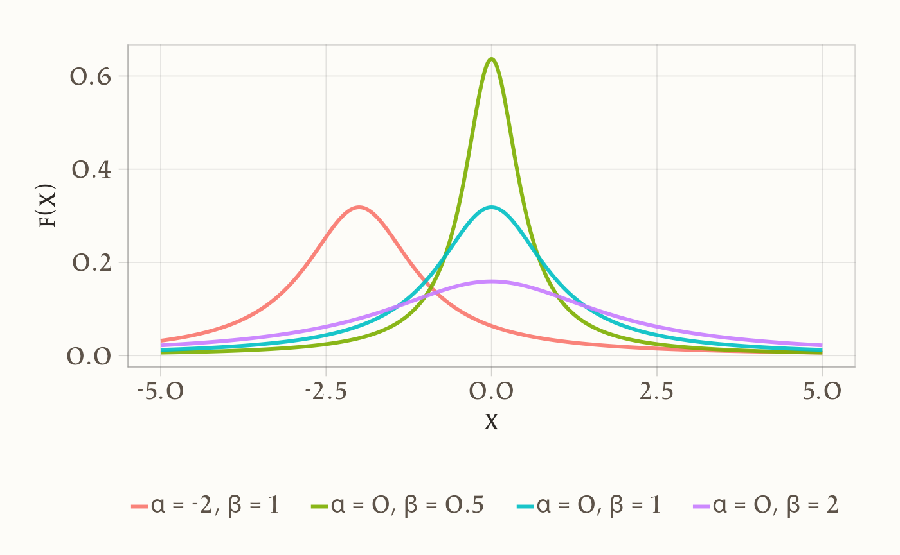

38 Distribuzioni di v.c. continue
- comprendere le principali distribuzioni di densità di probabilità;
- utilizzare R per manipolare e analizzare queste distribuzioni.
- Leggere il capitolo Continuous random variables (Blitzstein & Hwang, 2019).
- Leggere il capitolo Special Distributions (Schervish & DeGroot, 2014).
- Leggere il capitolo Random Variables and Probability Distributions (Schervish & DeGroot, 2014).
38.1 Introduzione
Proprio come per le variabili casuali discrete, anche per le variabili casuali continue è possibile rappresentare la variabilità di una popolazione attraverso un modello statistico. Tuttavia, mentre le distribuzioni discrete si applicano a fenomeni con un numero finito o numerabile di esiti, le variabili casuali continue richiedono l’uso di funzioni di densità di probabilità (pdf), che descrivono fenomeni in cui i valori possono assumere un continuum di possibilità. Queste funzioni ci permettono di modellare e analizzare situazioni in cui i risultati non sono discreti, ma possono variare in modo continuo.
La funzione di densità di probabilità \(f(x)\) associata a una variabile casuale continua \(X\) rappresenta la distribuzione della probabilità all’interno della popolazione. A differenza delle distribuzioni discrete, dove la probabilità è assegnata direttamente a singoli valori, la pdf non fornisce la probabilità di un singolo punto, ma descrive la probabilità che \(X\) assuma valori all’interno di un intervallo specifico. Questo approccio consente di costruire un modello matematico della popolazione, utile per fare previsioni e comprendere meglio i fenomeni aleatori continui.
38.1.1 Definizione di Variabile Casuale Continua
Definizione 38.1 Una variabile casuale continua è una variabile aleatoria \(X\) caratterizzata da una distribuzione di probabilità continua. Formalmente, \(X\) si definisce continua se soddisfa le seguenti proprietà:
-
Esistenza della funzione di densità (pdf):
Esiste una funzione non negativa \(f(x)\), detta funzione di densità di probabilità (pdf, dall’inglese probability density function), tale che:-
\(f(x) \geq 0\) per ogni \(x \in \mathbb{R}\);
- L’area totale sotto la curva di \(f(x)\) è pari a 1:
\[ \int_{-\infty}^{+\infty} f(x) \, dx = 1. \]
-
\(f(x) \geq 0\) per ogni \(x \in \mathbb{R}\);
-
Calcolo delle probabilità tramite integrazione:
Per ogni intervallo \((a, b] \subseteq \mathbb{R}\) (con \(a < b\)), la probabilità che \(X\) assuma valori in \((a, b]\) è data dall’integrale della pdf su tale intervallo:\[ P(a < X \leq b) = \int_{a}^{b} f(x) \, dx. \]
Questa probabilità coincide anche con la differenza della funzione di ripartizione (CDF, cumulative distribution function) \(F(x) = P(X \leq x)\) agli estremi dell’intervallo:
\[ P(a < X \leq b) = F(b) - F(a). \]
38.1.2 Proprietà Chiave delle Variabili Continue
-
Probabilità in un punto nulla:
A differenza delle variabili discrete, per una variabile continua la probabilità di assumere un valore esatto \(x_0\) è sempre zero:\[ P(X = x_0) = 0. \]
Questo avviene perché la probabilità è legata all’area sotto la curva \(f(x)\), e un singolo punto ha “larghezza zero”, risultando in un’area nulla. Di conseguenza, per variabili continue:
\[ P(a \leq X \leq b) = P(a < X \leq b) = P(a \leq X < b) = P(a < X < b). \]
Interpretazione della densità:
La funzione \(f(x)\) non rappresenta direttamente una probabilità, ma descrive come la probabilità si distribuisce nello spazio campionario. Valori maggiori di \(f(x)\) indicano regioni in cui è più probabile che \(X\) assuma valori (densità di probabilità).Modellizzazione di fenomeni continui:
Le distribuzioni continue sono utilizzate per rappresentare grandezze misurabili con precisione arbitraria, come tempo, lunghezze, o temperature. Esempi comuni includono la distribuzione normale, esponenziale e uniforme continua.
Iniziamo ad esaminare la distribuzione continua uniforme.
38.2 La Distribuzione Uniforme Continua
La distribuzione uniforme continua è un modello probabilistico fondamentale in cui tutti i valori all’interno di un intervallo specificato hanno la stessa densità di probabilità. È ideale per descrivere fenomeni in cui non vi è preferenza per alcun risultato particolare, come nel caso di uno spinner perfettamente bilanciato o di un generatore casuale ideale.
38.2.1 Esempio Intuitivo: Lo Spinner
Immaginiamo uno spinner circolare con valori angolari da 0° a 360°. Se lo spinner è perfettamente equilibrato, ogni angolo ha la stessa probabilità di essere selezionato. Questo esperimento rappresenta una realizzazione pratica della distribuzione uniforme sull’intervallo \([0, 360)\).
38.2.2 Simulazione della Distribuzione
Caso 1: Piccolo Campione. Generiamo 20 valori casuali e visualizziamoli con un istogramma:
set.seed(123) # Fissa il seme per riproducibilità
spinner_results <- runif(20, min = 0, max = 360)
print(spinner_results) # Stampa i risultati
#> [1] 103.53 283.79 147.23 317.89 338.57 16.40 190.12 321.27 198.52 164.38
#> [11] 344.46 163.20 243.93 206.15 37.05 323.94 88.59 15.14 118.05 343.62
# Visualizzazione
ggplot(data.frame(Valori = spinner_results), aes(x = Valori)) +
geom_histogram(
binwidth = 10,
fill = "skyblue",
color = "black",
alpha = 0.5
) +
labs(
x = "Angolo (gradi)",
y = "Frequenza relativa",
title = "Distribuzione con 20 simulazioni"
) 
Con pochi dati, l’istogramma mostra una disomogeneità dovuta alla variabilità campionaria, tipica dei piccoli campioni.
Caso 2: Grande Campione. Aumentando il numero di simulazioni, l’istogramma converge alla forma teorica:
spinner_results_large <- runif(100000, min = 0, max = 360)
ggplot(data.frame(Valori = spinner_results_large), aes(x = Valori)) +
geom_histogram(
binwidth = 10,
fill = "skyblue",
color = "black",
alpha = 0.5
) +
labs(
x = "Angolo (gradi)",
y = "Frequenza relativa",
title = "Distribuzione con 100.000 simulazioni"
) 
Con un campione grande, l’istogramma riflette chiaramente la uniformità teorica, dimostrando la Legge dei Grandi Numeri.
38.2.3 Funzione di Densità di Probabilità (PDF)
Per una variabile \(X \sim \mathcal{U}(a, b)\), la PDF è costante nell’intervallo \([a, b]\):
\[ f(x) = \begin{cases} \displaystyle \frac{1}{b - a} & \text{se } x \in [a, b], \\ 0 & \text{altrimenti}. \end{cases} \]
Interpretazione:
- L’area totale sotto la curva è 1: \(\int_{a}^{b} \frac{1}{b - a} \, dx = 1\).
- Al di fuori di \([a, b]\), la densità è nulla.
Esempio (spinner):
\[ f(x) = \frac{1}{360} \quad \text{per } x \in [0, 360]. \]
Visualizzazione in R:
x <- seq(-50, 410, length.out = 500) # Estende l'intervallo per chiarezza
density_uniform <- dunif(x, min = 0, max = 360)
ggplot(data.frame(x = x, y = density_uniform), aes(x = x, y = y)) +
geom_line(linewidth = 1.2, color = "blue") +
geom_vline(xintercept = c(0, 360), linetype = "dashed", color = "red") +
labs(
x = "x (gradi)",
y = "Densità f(x)",
title = "PDF della distribuzione uniforme"
) +
xlim(-50, 410) 
38.2.4 Calcolo delle Probabilità
La probabilità che \(X\) cada in un intervallo \([c, d] \subseteq [a, b]\) è:
\[ P(c \leq X \leq d) = \frac{d - c}{b - a}. \]
Esempio: Probabilità che lo spinner si fermi tra 150° e 250°:
\[ P(150 \leq X \leq 250) = \frac{250 - 150}{360} = \frac{100}{360} = \frac{5}{18} \approx 0.2778. \]
Verifica in R:
Visualizzazione dell’area:
ggplot(data.frame(x = x, fx = density_uniform), aes(x = x, y = fx)) +
geom_line(linewidth = 1.2, color = "blue") +
geom_area(
data = subset(data.frame(x, fx = density_uniform), x >= 150 & x <= 250),
aes(x = x, y = fx),
fill = "gray",
alpha = 0.5
) +
labs(
x = "x (gradi)",
y = "Densità f(x)",
title = "Area corrispondente a P(150 ≤ X ≤ 250)"
) 
38.2.5 Proprietà Fondamentali
Per \(X \sim \mathcal{U}(a, b)\):
-
Valore atteso (media):
\[ E(X) = \frac{a + b}{2}. \]
Interpretazione: Il centro dell’intervallo, punto di equilibrio della distribuzione.
-
Varianza:
\[ \text{Var}(X) = \frac{(b - a)^2}{12}. \]
Interpretazione: La dispersione aumenta col quadrato dell’ampiezza dell’intervallo.
Esempio (spinner):
E_X <- (0 + 360) / 2 # 180
V_X <- (360 - 0)^2 / 12 # 1080038.2.6 Funzioni R per la Distribuzione Uniforme
R mette a disposizione quattro funzioni principali:
| Funzione | Descrizione | Esempio d’uso |
|---|---|---|
runif() |
Genera valori casuali | runif(5, min=0, max=1) |
dunif() |
Calcola la densità \(f(x)\) | dunif(180, min=0, max=360) |
punif() |
Calcola la CDF \(P(X \leq x)\) | punif(250, min=0, max=360) |
qunif() |
Trova il quantile \(x\) per \(p\) | qunif(0.9, min=0, max=360) |
Esempi pratici:
# 1. Generazione di 5 numeri casuali in [0, 1]
runif(5, min = 0, max = 1) # Esempio: [0.287, 0.788, 0.409, 0.883, 0.940]
#> [1] 0.03716 0.92779 0.44799 0.91590 0.35575
# 2. Calcolo della densità in x = 0.5 (per U(0,1))
dunif(0.5, min = 0, max = 1) # Restituisce 1
#> [1] 1
# 3. Probabilità cumulativa fino a x = 0.8 (per U(0,1))
punif(0.8, min = 0, max = 1) # Restituisce 0.8
#> [1] 0.8
# 4. Calcolo del quantile per p = 0.5 (mediana)
qunif(0.5, min = 0, max = 360) # Restituisce 180
#> [1] 180In conclusione, la distribuzione uniforme offre un modello intuitivo per variabili continue con risultati equiprobabili. La sua semplicità analitica (PDF costante, formule esplicite per media e varianza) e il supporto completo in R la rendono uno strumento essenziale per:
- simulare scenari casuali,
- verificare algoritmi probabilistici,
- introdurre concetti base della statistica (legge dei grandi numeri, concetto di densità).
38.3 Distribuzione Esponenziale
La distribuzione esponenziale è una distribuzione di probabilità continua utilizzata per modellare il tempo di attesa fino al verificarsi di un evento casuale. Una delle sue caratteristiche distintive è la proprietà di assenza di memoria, che la rende unica rispetto ad altre distribuzioni.
38.3.1 Proprietà di Assenza di Memoria
L’assenza di memoria implica che la probabilità di un evento futuro è indipendente dal tempo già trascorso.
Ad esempio, supponiamo che il tempo di rottura di un bicchiere da vino dopo il primo utilizzo segua una distribuzione esponenziale. Se un bicchiere non si è rotto dopo 3 anni, la probabilità che si rompa nel prossimo anno è la stessa di quella di un bicchiere nuovo nel suo primo anno di utilizzo.
Questa proprietà rende la distribuzione esponenziale ideale per modellare eventi senza “usura accumulata”, come il tempo tra guasti indipendenti in un sistema.
Definizione 38.2 La funzione di densità di probabilità (PDF) di una variabile casuale esponenziale \(X\) è data da:
\[ f(x) = \lambda e^{-\lambda x}, \quad \lambda > 0,\, x \geq 0, \]
dove:
-
\(\lambda\) è il tasso di eventi per unità di tempo,
- \(\frac{1}{\lambda} = \mu\) è il tempo medio di attesa.
Esprimendo la densità in funzione di \(\mu\):
\[ f(x) = \frac{1}{\mu} e^{-x / \mu}. \]
38.3.2 Proprietà Principali
Valore atteso (media):
\[ E(X) = \frac{1}{\lambda} = \mu. \]Varianza:
\[ V(X) = \frac{1}{\lambda^2} = \mu^2. \]Deviazione standard:
\[ \sigma_X = \frac{1}{\lambda} = \mu. \]
Queste proprietà confermano che la distribuzione esponenziale è completamente determinata da un solo parametro: \(\lambda\) (o, equivalentemente, \(\mu\)).
38.3.3 Esempio Pratico
Supponiamo che il tempo medio per la pubblicazione dei voti di un esame sia \(\mu = 4\) giorni. La funzione di densità assume la forma:
\[ f(x) = \frac{1}{4} e^{-x / 4}. \]
Possiamo visualizzare la distribuzione con R:
# Parametri della distribuzione
mu <- 4
lambda <- 1 / mu
# Generare valori per x
x <- seq(0, 20, by = 0.01)
# Calcolare la densità
pdf <- dexp(x, rate = lambda)
# Grafico della densità
ggplot(data.frame(x, pdf), aes(x = x, y = pdf)) +
geom_line(linewidth = 1, color = "blue") +
labs(
x = "x", y = "f(x)",
title = "Funzione di densità della distribuzione esponenziale"
)
38.3.4 Calcolo delle Probabilità
1. Probabilità che \(X \leq 1.5\)
La probabilità che il tempo di attesa sia inferiore o uguale a 1.5 giorni è data dalla funzione di ripartizione cumulativa (CDF):
\[ P(X \leq 1.5) = F(1.5) = 1 - e^{-\lambda \cdot 1.5}. \]
In R:
pexp(1.5, rate = lambda)
#> [1] 0.3127Visualizziamo quest’area sotto la curva:
ggplot(data.frame(x, pdf), aes(x = x, y = pdf)) +
geom_line(linewidth = 1, color = "blue") +
geom_area(
data = subset(data.frame(x, pdf), x <= 1.5),
aes(x = x, y = pdf), fill = "gray", alpha = 0.5
) +
labs(
x = "x", y = "f(x)",
title = "Probabilità P(X <= 1.5)"
)
2. Probabilità che \(1 \leq X \leq 6\)
Si ottiene come differenza tra le CDF:
\[ P(1 \leq X \leq 6) = F(6) - F(1). \]
In R:
Visualizzazione dell’area:
ggplot(data.frame(x, pdf), aes(x = x, y = pdf)) +
geom_line(linewidth = 1, color = "blue") +
geom_area(
data = subset(data.frame(x, pdf), x >= 1 & x <= 6),
aes(x = x, y = pdf), fill = "gray", alpha = 0.5
) +
labs(
x = "x", y = "f(x)",
title = "Probabilità P(1 <= X <= 6)"
)
3. Probabilità che \(X \geq 5.5\)
Si calcola con la complementarità:
\[ P(X \geq 5.5) = 1 - F(5.5). \]
In R:
Visualizzazione:
ggplot(data.frame(x, pdf), aes(x = x, y = pdf)) +
geom_line(linewidth = 1, color = "blue") +
geom_area(
data = subset(data.frame(x, pdf), x >= 5.5),
aes(x = x, y = pdf), fill = "gray", alpha = 0.5
) +
labs(
x = "x", y = "f(x)",
title = "Probabilità P(X >= 5.5)"
)
38.3.5 Simulazione di Valori
Simuliamo 1.000.000 di valori casuali da una distribuzione esponenziale con \(\lambda = 1/4\) e costruiamo un istogramma confrontato con la densità teorica:
# Simulazione
set.seed(123)
samples <- rexp(1000000, rate = lambda)
# Istogramma con densità sovrapposta
ggplot(data.frame(samples), aes(x = samples)) +
geom_histogram(
aes(y = after_stat(density)), bins = 100,
fill = "skyblue", color = "black", alpha = 0.5
) +
geom_line(
data = data.frame(x, pdf), aes(x = x, y = pdf),
color = "red", linewidth = 1
) +
xlim(0, 20) +
labs(
x = "Tempo di attesa", y = "Frequenza relativa",
title = "Istogramma dei valori simulati con densità teorica"
)
In conclusione, la distribuzione esponenziale è uno strumento fondamentale per modellare eventi basati su tempi di attesa. Grazie alla sua semplicità e alla proprietà di assenza di memoria, trova applicazione in numerosi contesti. Con le funzioni di R (dexp, pexp, qexp, rexp), possiamo analizzare e visualizzare facilmente i dati che seguono questa distribuzione.
38.4 Distribuzione Normale
La distribuzione normale, anche nota come distribuzione gaussiana, è una delle distribuzioni di probabilità più importanti in statistica. Deve il suo nome a Carl Friedrich Gauss, che ne scoprì l’utilità per modellare gli errori di misurazione. Adolphe Quetelet, uno dei padri delle scienze sociali quantitative, fu il primo a utilizzare questa distribuzione per studiare le misurazioni dell’uomo. Karl Pearson introdusse il termine “normale”, pur riconoscendo che ciò potesse erroneamente suggerire l’anormalità di altre distribuzioni.
38.4.1 Una famiglia di distribuzioni
La distribuzione normale non è unica, ma rappresenta una famiglia di distribuzioni definite da due parametri:
- \(\mu\) (media): il valore attorno al quale i dati sono simmetricamente distribuiti.
- \(\sigma\) (deviazione standard): misura la dispersione dei dati attorno alla media.
La densità di probabilità per una variabile casuale continua \(Y\) che segue una distribuzione normale è data da:
\[ f(y; \mu, \sigma) = \frac{1}{\sigma\sqrt{2\pi}} \exp\left(-\frac{(y - \mu)^2}{2\sigma^2}\right), \]
dove \(\mu \in \mathbb{R}\) e \(\sigma > 0\).
Questa curva ha una caratteristica forma a campana, simmetrica rispetto alla media \(\mu\). La media, la mediana e la moda coincidono.
38.4.2 Origini storiche: dal binomiale alla normale
La connessione tra distribuzioni binomiali e normali fu notata da Abraham de Moivre nel 1733. Egli osservò che, aumentando il numero di prove di una distribuzione binomiale, la forma della distribuzione si avvicina a quella di una curva normale. Questo fenomeno può essere illustrato confrontando distribuzioni binomiali con pochi e molti eventi.
38.4.3 Distribuzione binomiale con poche prove
Con un numero di prove \(n = 10\) e una probabilità di successo \(p = 0.9\), la distribuzione binomiale è chiaramente asimmetrica:
# Parametri
n <- 10
p <- 0.9
# Calcolo della distribuzione binomiale
r_values <- 0:n
dist <- dbinom(r_values, size = n, prob = p)
# Grafico
ggplot(data.frame(Successi = r_values, Probabilità = dist), aes(x = Successi, y = Probabilità)) +
geom_bar(stat = "identity", fill = "skyblue", color = "black") +
labs(
title = "Distribuzione Binomiale: n = 10, p = 0.9",
x = "Numero di Successi", y = "Probabilità"
)
38.4.4 Distribuzione binomiale con molte prove
Aumentando il numero di prove a \(n = 1000\) con lo stesso \(p\), la distribuzione assume una forma più simmetrica, simile a quella della normale:
# Parametri aggiornati
n <- 1000
# Calcolo della distribuzione binomiale
r_values <- 850:950 # Intervallo per una migliore visualizzazione
dist <- dbinom(r_values, size = n, prob = p)
# Grafico
ggplot(data.frame(Successi = r_values, Probabilità = dist), aes(x = Successi, y = Probabilità)) +
geom_bar(stat = "identity", fill = "skyblue", color = "black") +
labs(
title = "Distribuzione Binomiale: n = 1000, p = 0.9",
x = "Numero di Successi", y = "Probabilità"
)
38.4.5 La normale generata da simulazioni
Un modo intuitivo per comprendere la distribuzione normale è attraverso la simulazione di passeggiate casuali. Immaginiamo che 1000 persone partano da una posizione iniziale e facciano 16 passi, ciascuno determinato da un lancio di moneta che stabilisce se avanzare o arretrare. Dopo 16 passi, la distribuzione delle loro posizioni segue una curva normale.
# Parametri
numero_passi <- 16
ripetizioni <- 1000
# Generazione di passeggiate casuali
set.seed(123)
x <- matrix(0, nrow = numero_passi + 1, ncol = ripetizioni)
for (i in 1:ripetizioni) {
passi <- runif(numero_passi, min = -1, max = 1)
x[-1, i] <- cumsum(passi)
}
# Grafico delle passeggiate casuali
df <- data.frame(
Passo = rep(0:numero_passi, times = ripetizioni),
Distanza = as.vector(x)
)
ggplot(
df,
aes(
x = Passo,
y = Distanza,
group = rep(1:ripetizioni, each = numero_passi + 1))
) +
geom_line(color = "blue", alpha = 0.05) +
labs(
title = "Passeggiate Casuali",
x = "Numero di Passi", y = "Distanza dall'Origine"
)
38.5 Proprietà della distribuzione normale
38.5.1 Media e varianza
-
Media: \(\mathbb{E}(Y) = \mu\)
- Varianza: \(\mathbb{V}(Y) = \sigma^2\)
38.5.2 Regola empirica
Nella normale, una proporzione nota dei dati cade entro 1, 2 o 3 deviazioni standard dalla media:
-
68.3% tra \([\mu - \sigma, \mu + \sigma]\)
-
95.6% tra \([\mu - 2\sigma, \mu + 2\sigma]\)
- 99.7% tra \([\mu - 3\sigma, \mu + 3\sigma]\)
38.6 Distribuzione normale standard
La normale standard è un caso speciale della normale con \(\mu = 0\) e \(\sigma = 1\). Ogni normale può essere trasformata in una normale standard attraverso la formula:
\[ Z = \frac{Y - \mu}{\sigma}. \]
38.7 Funzioni principali in R
R offre funzioni integrate per la distribuzione normale:
-
dnorm(): calcola la densità di probabilità.
-
pnorm(): calcola la funzione cumulativa (CDF).
-
qnorm(): restituisce i quantili della distribuzione.
-
rnorm(): genera valori casuali.
38.7.1 Esempi
38.8 Visualizzazione
Esempio di confronto tra PDF, CDF e quantili:
# Importare le librerie necessarie
library(gridExtra)
# Definire i parametri
mu <- 100
sigma <- 15
# Generare l'intervallo di valori per x
x <- seq(mu - 3 * sigma, mu + 3 * sigma, length.out = 1000)
# PDF
pdf_plot <- ggplot(
data.frame(x = x, pdf = dnorm(x, mean = mu, sd = sigma)),
aes(x = x, y = pdf)
) +
geom_line(color = "blue") +
labs(title = "PDF", x = "Valori", y = "Densità")
# CDF
cdf_plot <- ggplot(
data.frame(x = x, cdf = pnorm(x, mean = mu, sd = sigma)),
aes(x = x, y = cdf)
) +
geom_line(color = "orange") +
labs(title = "CDF", x = "Valori", y = "Cumulativa")
# PPF
quantiles <- seq(0.01, 0.99, length.out = 100)
ppf_plot <- ggplot(
data.frame(
Quantile = quantiles,
Valori = qnorm(quantiles, mean = mu, sd = sigma)
),
aes(x = Quantile, y = Valori)
) +
geom_line(color = "green") +
labs(title = "PPF", x = "Quantile", y = "Valori")
# Mostrare i grafici
grid.arrange(pdf_plot, cdf_plot, ppf_plot, ncol = 3)
38.9 Distribuzione Chi-Quadrato
La distribuzione \(\chi^2\) deriva dalla distribuzione normale e descrive la somma dei quadrati di \(k\) variabili casuali indipendenti e identicamente distribuite (i.i.d.) che seguono la distribuzione normale standard \(\mathcal{N}(0, 1)\). Una variabile casuale \(\chi^2_{~k}\) con \(k\) gradi di libertà è definita come:
\[ Z_1^2 + Z_2^2 + \dots + Z_k^2, \]
dove \(Z_1, Z_2, \dots, Z_k \sim \mathcal{N}(0, 1)\). Il parametro \(k\), detto gradi di libertà (\(\nu\)), determina la forma della distribuzione.
38.9.1 Funzione di densità
La densità di probabilità della distribuzione \(\chi^2_{~\nu}\) è data da:
\[ f(x) = C_{\nu} x^{\nu/2 - 1} \exp(-x/2), \quad \text{per } x > 0, \]
dove \(C_{\nu}\) è una costante di normalizzazione.
38.9.2 Simulazione della Distribuzione Chi-Quadrato
Utilizziamo la definizione per simulare la distribuzione \(\chi^2\) con 3 gradi di libertà.
# Impostare il seed per la riproducibilità
set.seed(1234)
# Generare 1000 valori casuali per 3 variabili gaussiane standard
n <- 1000
var1 <- rnorm(n, mean = 0, sd = 1)
var2 <- rnorm(n, mean = 0, sd = 1)
var3 <- rnorm(n, mean = 0, sd = 1)
# Calcolare la somma dei quadrati
chi_sq_values <- var1^2 + var2^2 + var3^2
# Creare un dataframe per il grafico
data <- data.frame(chi_sq_values = chi_sq_values)
# Istogramma e densità teorica
ggplot(data, aes(x = chi_sq_values)) +
geom_histogram(
aes(y = after_stat(density)),
bins = 30, fill = "lightblue", color = "black", alpha = 0.7
) +
stat_function(fun = dchisq, args = list(df = 3), color = "red", size = 1) +
labs(
title = "Distribuzione Chi-Quadrato (df = 3)",
x = "Valore",
y = "Densità"
)
Descrizione:
- L’istogramma rappresenta i valori empirici simulati.
- La curva rossa rappresenta la densità teorica della distribuzione \(\chi^2_{~3}\).
38.9.3 Media e Varianza Empiriche
Calcoliamo la media e la varianza dei valori simulati:
Questi valori possono essere confrontati con le proprietà teoriche della distribuzione \(\chi^2\):
- Media: \(\nu = 3\).
- Varianza: \(2\nu = 6\).
38.9.4 Grafico per Diversi Gradi di Libertà
Confrontiamo le distribuzioni \(\chi^2\) per diversi valori di \(\nu\).
# Intervallo di x
x <- seq(0, 40, by = 0.1)
# Gradi di libertà
nus <- c(2, 4, 8, 16)
# Creare un dataframe
data <- do.call(rbind, lapply(nus, function(nu) {
data.frame(x = x, f_x = dchisq(x, df = nu), nu = as.factor(nu))
}))
# Grafico
ggplot(data, aes(x = x, y = f_x, color = nu)) +
geom_line(size = 1) +
labs(
title = "Distribuzioni Chi-Quadrato per Diversi Valori di \u03bd",
x = "x",
y = "f(x)",
color = expression(nu)
) 
38.9.5 Proprietà della Distribuzione Chi-Quadrato
- Asimmetria: La distribuzione \(\chi^2_{\nu}\) è asimmetrica, ma diventa più simmetrica al crescere di \(\nu\).
- Media: \(\mathbb{E}[\chi^2_{\nu}] = \nu\).
- Varianza: \(\mathbb{V}[\chi^2_{\nu}] = 2\nu\).
- Convergenza: Per \(\nu \to \infty\), \(\chi^2_{\nu} \to \mathcal{N}(\nu, 2\nu)\).
- Somma: La somma di variabili \(\chi^2\) indipendenti con gradi di libertà \(\nu_1, \nu_2, \dots, \nu_k\) segue una distribuzione \(\chi^2\) con \(\nu = \sum_{i=1}^k \nu_i\).
38.9.6 Applicazioni
La distribuzione \(\chi^2\) è utilizzata in molteplici ambiti statistici, tra cui:
- Test di indipendenza: Per verificare se due variabili categoriche sono indipendenti.
- Test di adattamento: Per confrontare una distribuzione empirica con una teorica.
- ANOVA: Per valutare la variabilità nei dati.
Questa distribuzione è particolarmente importante in contesti di inferenza statistica e si trova alla base di numerosi test parametrici.
38.10 Distribuzione \(t\) di Student
La distribuzione \(t\) di Student è una delle distribuzioni fondamentali della statistica inferenziale. Deriva dalle distribuzioni Normale e Chi-quadrato ed è particolarmente utile per analizzare campioni di piccole dimensioni o situazioni in cui la varianza della popolazione è sconosciuta.
38.10.1 Definizione Formale
Se:
- \(Z \sim \mathcal{N}(0, 1)\) (distribuzione Normale standard),
- \(W \sim \chi^2_{\nu}\) (distribuzione Chi-quadrato con \(\nu\) gradi di libertà),
e \(Z\) e \(W\) sono indipendenti, allora la variabile casuale
\[ T = \frac{Z}{\sqrt{\frac{W}{\nu}}} \]
segue una distribuzione \(t\) di Student con \(\nu\) gradi di libertà. Si indica come \(T \sim t_{\nu}\).
38.10.2 Proprietà della Distribuzione \(t\) di Student
-
Forma della distribuzione:
- La distribuzione \(t\) è simmetrica rispetto a zero, come la Normale standard (\(\mathcal{N}(0, 1)\)).
- Presenta code più pesanti rispetto alla Normale, riflettendo una maggiore probabilità di osservare valori estremi.
-
Code pesanti e gradi di libertà:
- La pesantezza delle code diminuisce con l’aumentare dei gradi di libertà (\(\nu\)).
- Per \(\nu \to \infty\), la distribuzione \(t\) converge alla distribuzione Normale standard.
-
Media e varianza:
La media è \(0\) per \(\nu > 1\).
-
La varianza è:
\[ \text{Var}(T) = \frac{\nu}{\nu - 2}, \quad \text{per } \nu > 2. \]
Per \(\nu \leq 2\), la varianza non è definita.
-
Applicazioni principali:
- Test t di Student: Confronto delle medie di due gruppi o test per una singola media.
- Intervalli di confidenza: Stima dell’intervallo per la media quando la varianza è sconosciuta.
38.10.3 Differenze tra la Distribuzione \(t\) e la Normale
| Caratteristica | Distribuzione Normale | Distribuzione \(t\) di Student |
|---|---|---|
| Forma | Simmetrica, a campana | Simmetrica, a campana |
| Code | Sottili | Pesanti |
| Dipendenza dai gradi di libertà | No | Sì |
| Convergenza | Non varia | Con \(\nu \to \infty\), converge alla Normale |
38.10.4 Visualizzazione della Distribuzione \(t\)
Confrontiamo graficamente la distribuzione \(t\) con diversi gradi di libertà e la distribuzione Normale standard:
# Creazione dei dati
x <- seq(-4, 4, length.out = 1000)
df <- c(1, 2, 5, 10) # Gradi di libertà
# Dataframe con curve di densità
data <- data.frame(
x = rep(x, length(df) + 1),
density = c(
dnorm(x),
dt(x, df[1]),
dt(x, df[2]),
dt(x, df[3]),
dt(x, df[4])
),
distribution = rep(c("Normale", paste("t (df =", df, ")")), each = length(x))
)
# Plot
ggplot(data, aes(x = x, y = density, color = distribution)) +
geom_line(size = 1) +
labs(
title = "Distribuzione Normale e distribuzioni $t$ di Student",
x = "Valore",
y = "Densità",
color = "Distribuzione"
) 
38.10.5 Simulazione della Distribuzione \(t\)
Simuliamo una distribuzione \(t\) con 10 gradi di libertà e confrontiamola con la densità teorica.
# Impostare il seed per la riproducibilità
set.seed(123)
# Simulare 1000 valori da una distribuzione t
n <- 1000
df <- 10 # Gradi di libertà
t_values <- rt(n, df = df)
# Creare un dataframe per il grafico
data <- data.frame(t_values = t_values)
# Istogramma con densità teorica
ggplot(data, aes(x = t_values)) +
geom_histogram(
aes(y = after_stat(density)),
bins = 30, fill = "lightblue", color = "black", alpha = 0.7
) +
stat_function(fun = dt, args = list(df = df), color = "red", size = 1) +
labs(
title = paste("Distribuzione $t$ di Student (df =", df, ")"),
x = "Valore",
y = "Densità"
) 
38.10.6 Proprietà Teoriche della Distribuzione \(t\)
Media: \[ \mathbb{E}[T] = 0, \quad \text{per } \nu > 1. \]
Varianza: \[ \mathbb{V}[T] = \frac{\nu}{\nu - 2}, \quad \text{per } \nu > 2. \]
-
Simmetria:
- La distribuzione è simmetrica rispetto a zero, come la Normale.
-
Code:
- Le code sono più pesanti rispetto alla Normale, riflettendo una maggiore incertezza per piccoli campioni.
In conclusione, la distribuzione \(t\) di Student è uno strumento versatile nell’inferenza statistica, trovando applicazione in contesti sia frequentisti che bayesiani. È particolarmente utile in situazioni in cui la conoscenza della varianza è limitata o i campioni sono di dimensioni ridotte. Grazie alla sua forma simmetrica e alle code più pesanti rispetto alla distribuzione Normale, la distribuzione \(t\) può modellare meglio l’incertezza, includendo una maggiore probabilità per valori estremi.
Nel contesto bayesiano, la distribuzione \(t\) viene utilizzata come:
- Prior informativo robusto, per modellare parametri con valori plausibili lontani dalla media ma con una penalizzazione graduale per valori estremi.
- Distribuzione predittiva per sintetizzare l’incertezza derivante da campioni piccoli o con variabilità elevata.
In entrambi i paradigmi, la distribuzione \(t\) rappresenta una scelta robusta, capace di riflettere in modo flessibile la natura dei dati. Inoltre, per valori elevati dei gradi di libertà, la distribuzione \(t\) converge alla distribuzione Normale, un caso limite che ne estende ulteriormente l’utilità in vari contesti analitici.
38.11 Funzione Beta di Eulero
La funzione Beta di Eulero è una funzione matematica, non una densità di probabilità, ma è strettamente collegata alla distribuzione Beta, poiché appare nella sua definizione. Indicata comunemente con il simbolo \(\mathcal{B}(\alpha, \beta)\), la funzione Beta può essere espressa in vari modi. Per i nostri scopi, utilizziamo la seguente definizione:
\[ \mathcal{B}(\alpha, \beta) = \frac{\Gamma(\alpha)\Gamma(\beta)}{\Gamma(\alpha + \beta)}\,, \]
dove \(\Gamma(x)\) rappresenta la funzione Gamma, una generalizzazione del fattoriale definita per numeri reali positivi. Quando \(x\) è un numero intero, la funzione Gamma si riduce al fattoriale traslato:
\[ \Gamma(x) = (x-1)!. \]
Esempio 38.1 Supponiamo di voler calcolare \(\mathcal{B}(3, 9)\). Utilizzando la definizione, abbiamo:
\[ \mathcal{B}(3, 9) = \frac{\Gamma(3) \cdot \Gamma(9)}{\Gamma(3 + 9)}. \]
In R, possiamo calcolarla in tre modi diversi.
- Utilizzando la definizione con la funzione
gamma():
- Utilizzando direttamente la funzione
beta()di R:
beta(alpha, beta)
#> [1] 0.00202- Calcolo manuale con fattoriali:
Tutti e tre i metodi restituiscono lo stesso risultato, confermando la correttezza della definizione.
La funzione Beta è utilizzata nella definizione della densità di probabilità Beta. Essa serve a normalizzare la densità, garantendo che l’area sotto la curva sia pari a \(1\).
38.12 Distribuzione Beta
La distribuzione Beta, indicata come \(\mathcal{Beta}(\alpha, \beta)\), è una distribuzione di probabilità continua definita sull’intervallo \((0, 1)\). È particolarmente utile per modellare proporzioni, probabilità o qualsiasi fenomeno limitato tra 0 e 1.
Definizione 38.3 Se una variabile casuale \(\theta\) segue una distribuzione Beta con parametri \(\alpha > 0\) e \(\beta > 0\), indicata come \(\theta \sim \mathcal{Beta}(\alpha, \beta)\), la sua funzione di densità è data da:
\[ \mathcal{Beta}(\theta \mid \alpha, \beta) = \frac{1}{B(\alpha, \beta)} \theta^{\alpha-1} (1-\theta)^{\beta-1}, \quad \theta \in (0, 1), \]
dove \(\mathcal{B}(\alpha, \beta)\) è la funzione Beta di Eulero.
Un’altra rappresentazione equivalente è:
\[ \mathcal{Beta}(\theta \mid \alpha, \beta) = \frac{\Gamma(\alpha + \beta)}{\Gamma(\alpha)\Gamma(\beta)} \theta^{\alpha-1} (1-\theta)^{\beta-1}, \quad \theta \in (0, 1). \]
38.12.1 Ruolo dei Parametri \(\alpha\) e \(\beta\)
I parametri \(\alpha\) e \(\beta\) determinano la forma della distribuzione:
- \(\alpha > 1\): favorisce valori di \(\theta\) vicini a 1.
- \(\beta > 1\): favorisce valori di \(\theta\) vicini a 0.
- \(\alpha = \beta = 1\): corrisponde alla distribuzione uniforme sull’intervallo \([0, 1]\).
- \(\alpha, \beta < 1\): la distribuzione è bimodale, concentrandosi agli estremi (vicino a 0 e 1).
38.12.2 Proprietà della Distribuzione Beta
Valore atteso: \[ \mathbb{E}(\theta) = \frac{\alpha}{\alpha + \beta}. \]
Varianza: \[ \mathbb{V}(\theta) = \frac{\alpha \beta}{(\alpha + \beta)^2 (\alpha + \beta + 1)}. \]
Moda (se \(\alpha, \beta > 1\)): \[ \text{Moda}(\theta) = \frac{\alpha - 1}{\alpha + \beta - 2}. \]
Queste proprietà evidenziano come \(\alpha\) e \(\beta\) possano essere interpretati come “successi” e “fallimenti” in una serie di prove, fornendo un collegamento intuitivo con la distribuzione binomiale.
38.12.3 Relazione con la Distribuzione Binomiale
La distribuzione Beta può essere vista come una generalizzazione continua della distribuzione binomiale. In particolare, mentre la distribuzione binomiale modella il numero di successi in una serie di prove, la distribuzione Beta modella la probabilità di successo come una variabile casuale.
Nell’inferenza bayesiana, la distribuzione Beta è spesso utilizzata come prior coniugato per la distribuzione binomiale. Ad esempio:
- se \(\theta \sim \mathcal{Beta}(\alpha, \beta)\) è il prior,
- e osserviamo \(x\) successi in \(n\) prove, allora la distribuzione a posteriori è:
\[ \theta \mid \text{dati} \sim \mathcal{Beta}(\alpha + x, \beta + n - x). \]
Questa proprietà consente un aggiornamento semplice delle credenze basato sui dati osservati.
38.12.4 Visualizzazione della Distribuzione Beta
Di seguito mostriamo come la forma della distribuzione Beta varia al variare dei parametri \(\alpha\) e \(\beta\):
# Parametri
x <- seq(0, 1, length.out = 200)
alphas <- c(0.5, 5.0, 1.0, 2.0, 2.0)
betas <- c(0.5, 1.0, 3.0, 2.0, 5.0)
# Creare un dataframe
df <- do.call(rbind, lapply(1:length(alphas), function(i) {
data.frame(
x = x,
density = dbeta(x, alphas[i], betas[i]),
label = paste0("α = ", alphas[i], ", β = ", betas[i])
)
}))
# Plot
ggplot(df, aes(x = x, y = density, color = label)) +
geom_line(size = 1) +
labs(
x = "x",
y = "f(x)",
title = "Distribuzioni Beta"
) +
theme(legend.title = element_blank())
38.12.5 Costante di Normalizzazione
La costante di normalizzazione della distribuzione Beta è il reciproco della funzione Beta di Eulero, \(B(\alpha, \beta)\). Questa garantisce che:
\[ \int_0^1 \mathcal{Beta}(\theta \mid \alpha, \beta) \, d\theta = 1. \]
Esempio 38.2 Di seguito viene proposto un esempio in R per calcolare l’area sottesa alla distribuzione Beta non normalizzata e, con gli stessi parametri, ottenere il valore della funzione Beta di Eulero. L’obiettivo è mostrare come la costante di normalizzazione, pari al reciproco di \(B(\alpha, \beta)\), garantisca che l’integrale della densità normalizzata su \([0,1]\) sia pari a 1.
Supponiamo di voler utilizzare i parametri:
- \(\alpha = 2\)
- \(\beta = 5\)
# Parametri della distribuzione Beta
alpha <- 2
beta <- 5
# Definiamo la funzione non normalizzata della distribuzione Beta
unnormalized_beta <- function(theta) {
theta^(alpha - 1) * (1 - theta)^(beta - 1)
}
# Calcoliamo l'integrale della funzione non normalizzata su [0, 1]
integrale <- integrate(unnormalized_beta, lower = 0, upper = 1)$value
cat("Integrale della funzione non normalizzata:", integrale, "\n")
#> Integrale della funzione non normalizzata: 0.03333
# Calcoliamo il valore della funzione Beta usando la funzione beta() di R
valore_beta <- beta(alpha, beta)
cat("Valore della funzione Beta B(alpha, beta):", valore_beta, "\n")
#> Valore della funzione Beta B(alpha, beta): 0.03333
# Verifichiamo che l'integrale calcolato coincide con B(alpha, beta)
if (abs(integrale - valore_beta) < 1e-8) {
cat("L'integrale coincide con il valore della funzione Beta.\n")
} else {
cat("C'è una discrepanza tra l'integrale e il valore della funzione Beta.\n")
}
#> L'integrale coincide con il valore della funzione Beta.
# Calcoliamo la costante di normalizzazione, che è il reciproco della funzione Beta
costante_normalizzazione <- 1 / valore_beta
cat("Costante di normalizzazione (1 / B(alpha, beta)):", costante_normalizzazione, "\n")
#> Costante di normalizzazione (1 / B(alpha, beta)): 30
# Verifica: l'integrale della densità normalizzata deve essere 1
densita_normalizzata <- function(theta) {
costante_normalizzazione * unnormalized_beta(theta)
}
integrale_normalizzato <- integrate(densita_normalizzata, lower = 0, upper = 1)$value
cat("Integrale della densità normalizzata:", integrale_normalizzato, "\n")
#> Integrale della densità normalizzata: 1Spiegazione del Codice
Definizione dei Parametri e della Funzione
Impostiamo \(\alpha = 2\) e \(\beta = 5\) e definiamo la funzione non normalizzata: \[ f(\theta) = \theta^{\alpha-1}(1-\theta)^{\beta-1}. \]Calcolo dell’Integrale
Utilizzando la funzioneintegrate(), calcoliamo l’area sottesa a \(f(\theta)\) nell’intervallo \([0,1]\), che corrisponde a \(\mathcal{B}(\alpha, \beta)\).Verifica con la Funzione Beta
La funzionebeta(alpha, beta)di R restituisce direttamente il valore di \(\mathcal{B}(\alpha, \beta)\). La stampa dei due valori conferma che l’integrale calcolato e il valore della funzione Beta coincidono.Costante di Normalizzazione
Il reciproco di \(\mathcal{B}(\alpha, \beta)\) è calcolato e utilizzato per definire la densità normalizzata della distribuzione Beta. L’integrazione della densità normalizzata su \([0,1]\) restituisce 1, confermando la corretta normalizzazione.
Questo esempio in R mostra in modo pratico come la costante di normalizzazione derivi dalla funzione Beta di Eulero e come essa venga applicata per ottenere una densità di probabilità correttamente normalizzata.
In conclusione, la distribuzione Beta si rivela particolarmente utile per modellare variabili continue comprese nell’intervallo [0, 1]. Grazie alla sua parametrizzazione tramite \(\alpha\) e \(\beta\), consente di adattare la forma della densità in modo specifico alle caratteristiche osservate dei dati, facilitando la stima di proporzioni. Inoltre, essendo il coniugato della distribuzione binomiale, permette un aggiornamento analitico nei modelli bayesiani, semplificando l’inferenza quando si raccolgono dati incrementali, come nella stima della probabilità di successo in esperimenti o studi psicologici.
38.13 Distribuzione di Cauchy
La distribuzione di Cauchy è un caso speciale della distribuzione \(t\) di Student con un solo grado di libertà (\(t_1\)). Questa distribuzione è caratterizzata da code molto pesanti e da una media e varianza non definite, rendendola particolarmente utile in contesti dove valori estremi possono avere un’influenza importante.
Definizione 38.4 La funzione di densità di probabilità della distribuzione di Cauchy è definita da due parametri:
- \(\alpha\): posizione (location), che determina il centro della distribuzione.
- \(\beta > 0\): scala (scale), che controlla la larghezza della distribuzione.
La densità è data da:
\[ f(x \mid \alpha, \beta) = \frac{1}{\pi \beta \left[1 + \left( \frac{x - \alpha}{\beta} \right)^2\right]} , \]
dove:
- \(x \in \mathbb{R}\),
- \(\alpha \in \mathbb{R}\),
- \(\beta > 0\).
Questa funzione descrive una distribuzione simmetrica attorno a \(\alpha\), con code più pesanti rispetto alla distribuzione Normale.
38.13.1 Proprietà della Distribuzione di Cauchy
- Simmetria: La distribuzione è simmetrica rispetto a \(\alpha\).
- Code Pesanti: Le code sono significativamente più pesanti rispetto alla distribuzione Normale, con una decrescita più lenta (\(\propto x^{-2}\)).
- Media e Varianza: La distribuzione non ha una media né una varianza definita.
- Relazione con \(t_1\): La distribuzione di Cauchy è equivalente a una distribuzione \(t\) di Student con 1 grado di libertà.
- Caratteristiche Estreme: I valori estremi hanno una probabilità più alta rispetto ad altre distribuzioni comuni, rendendola utile per modellare fenomeni con outlier significativi.
38.13.2 Visualizzazione della Distribuzione di Cauchy
Per comprendere l’effetto dei parametri \(\alpha\) e \(\beta\) sulla forma della distribuzione, consideriamo alcuni esempi con:
- \(\alpha = 0.0, 0.0, 0.0, -2.0\),
- \(\beta = 0.5, 1.0, 2.0, 1.0\).
# Definire i parametri
x <- seq(-5, 5, length.out = 500)
alphas <- c(0.0, 0.0, 0.0, -2.0)
betas <- c(0.5, 1.0, 2.0, 1.0)
# Creare un data frame per i risultati
df <- do.call(rbind, lapply(1:length(alphas), function(i) {
data.frame(
x = x,
density = dcauchy(x, location = alphas[i], scale = betas[i]),
label = paste0("α = ", alphas[i], ", β = ", betas[i])
)
}))
# Grafico
ggplot(df, aes(x = x, y = density, color = label)) +
geom_line(size = 1) +
labs(
x = "x",
y = "f(x)",
title = "Distribuzioni di Cauchy con diversi parametri"
) +
theme(
legend.title = element_blank()
)
38.13.3 Applicazioni della Distribuzione di Cauchy
-
Inferenza Bayesiana:
- Utilizzata come prior robusto in modelli bayesiani, particolarmente quando si vuole attribuire una probabilità maggiore a valori estremi rispetto a una distribuzione Normale.
-
Modellazione di Fenomeni con Outlier:
- La distribuzione di Cauchy è adatta per descrivere dati con valori estremi significativi che possono influenzare fortemente altre distribuzioni.
In conclusione, la distribuzione di Cauchy, con le sue proprietà uniche come code pesanti e l’assenza di media e varianza definite, è uno strumento fondamentale per modellare fenomeni in cui i valori estremi giocano un ruolo importante. La sua relazione con la distribuzione \(t\) di Student e la sua utilità nei modelli bayesiani ne ampliano ulteriormente le applicazioni in contesti statistici e probabilistici avanzati.
38.14 Distribuzione Gamma
La distribuzione Gamma è una distribuzione di probabilità continua utilizzata principalmente per modellare variabili strettamente positive, come tassi, varianze, o tempi di attesa. È usata nella statistica bayesiana come distribuzione a priori per parametri positivi e trova applicazione in ambiti come la modellazione di eventi rari.
Definizione 38.5 La distribuzione Gamma è caratterizzata da due parametri principali:
- Parametro di forma (\(\alpha\)): determina la forma generale della distribuzione.
- Parametro di scala (\(\theta\)) o, alternativamente, il parametro di tasso (\(\beta = 1/\theta\)): regola la larghezza o la dispersione della distribuzione.
La funzione di densità di probabilità (PDF) è data da:
\[ f(x \mid \alpha, \theta) = \frac{x^{\alpha-1} e^{-x/\theta}}{\theta^\alpha \Gamma(\alpha)}, \quad x > 0, \]
dove:
- \(x\) è la variabile casuale continua,
- \(\Gamma(\alpha)\) è la funzione Gamma di Eulero, definita come:
\[ \Gamma(\alpha) = \int_0^\infty t^{\alpha-1} e^{-t} dt. \]
Se utilizziamo il parametro di tasso \(\beta = 1/\theta\), la PDF può essere scritta come:
\[ f(x \mid \alpha, \beta) = \frac{\beta^\alpha x^{\alpha-1} e^{-\beta x}}{\Gamma(\alpha)}, \quad x > 0. \]
38.14.1 Proprietà della Distribuzione Gamma
Media: \[ \mathbb{E}[X] = \alpha \cdot \theta = \frac{\alpha}{\beta}. \]
Varianza: \[ \text{Var}(X) = \alpha \cdot \theta^2 = \frac{\alpha}{\beta^2}. \]
Moda (per \(\alpha > 1\)): \[ \text{Moda}(X) = (\alpha - 1) \cdot \theta. \]
Di seguito, mostriamo un esempio per \(\alpha = 3\) e \(\beta = 5/3\), calcolando e rappresentando graficamente la distribuzione.
-
Calcolo della Media e della Deviazione Standard:
-
Generazione e Plot dei Dati:
# Generazione di dati set.seed(123) data <- rgamma(100000, shape = alpha, rate = beta) # Data frame per ggplot df <- data.frame(values = data) # Plot ggplot(df, aes(x = values)) + geom_histogram(aes(y = ..density..), bins = 30, fill = "green", alpha = 0.6) + stat_function(fun = function(x) dgamma(x, shape = alpha, rate = beta), color = "red", size = 1) + labs( x = "Valore", y = "Densità di probabilità", title = "Distribuzione Gamma con α=3 e β=5/3" )
38.14.2 Applicazioni della Distribuzione Gamma
Modellazione del Tempo di Attesa:
La distribuzione Gamma è ideale per modellare tempi di attesa, ad esempio, il tempo necessario affinché si verifichino \(n\) eventi in un processo di Poisson.-
Inferenza Bayesiana:
- Utilizzata come prior per parametri positivi, come tassi (\(\lambda\)) o varianze (\(\sigma^2\)).
- Ad esempio, nella modellazione bayesiana dei processi di Poisson, una distribuzione Gamma è una scelta naturale per il prior su \(\lambda\).
38.15 Riflessioni conclusive
Le distribuzioni di probabilità costituiscono il cuore dell’inferenza statistica, sia bayesiana che frequentista. In questo capitolo, abbiamo esplorato come R offre un insieme completo di strumenti per lavorare con diverse distribuzioni, permettendo di modellare e analizzare una vasta gamma di fenomeni.
38.15.1 Principali Applicazioni
-
Inferenza Bayesiana:
Le distribuzioni di probabilità, come la Beta, la Gamma e la Normale, sono essenziali per definire priors, calcolare posteriori e quantificare l’incertezza nei modelli bayesiani. Ad esempio:- La distribuzione Beta è ideale per modellare credenze a priori su proporzioni o probabilità.
- La distribuzione Gamma è ampiamente usata per modellare parametri positivi come tassi o varianze.
Analisi Statistica e Modellazione:
Le distribuzioni, come la \(t\) di Student, sono fondamentali per il confronto tra campioni, mentre la Normale è indispensabile per modellare fenomeni che seguono la legge del limite centrale.Generazione e Simulazione di Dati:
R permette di generare campioni casuali da distribuzioni comuni, utili per simulazioni, bootstrap e validazione di modelli.
38.15.2 Funzionalità di R
Con poche funzioni, R consente di:
-
Generare campioni casuali: con funzioni come
rnorm,rgamma,rbeta, possiamo simulare dati da distribuzioni specifiche. -
Calcolare densità: ad esempio, con
dnorm,dgamma,dbeta, possiamo visualizzare le funzioni di densità. -
Calcolare probabilità cumulate: con funzioni come
pnorm,pbeta, possiamo determinare probabilità su intervalli specifici. -
Determinare quantili: con funzioni come
qnorm,qgamma, possiamo calcolare i punti corrispondenti a specifici livelli di probabilità.
38.15.3 Versatilità delle Distribuzioni
Le distribuzioni esplorate non solo descrivono fenomeni naturali, ma sono anche i “mattoncini” per costruire modelli statistici complessi. Le loro proprietà, come la media, la varianza, la simmetria o le code pesanti, consentono di adattare il modello al fenomeno studiato.
In conclusione, il linguaggio R, con la sua flessibilità e ricchezza di strumenti, permette di padroneggiare le distribuzioni di probabilità, non solo come oggetti matematici, ma anche come strumenti pratici per rispondere a domande complesse. La comprensione e l’uso delle distribuzioni presentate costituiscono le fondamenta per avanzare verso tecniche più sofisticate, come l’inferenza bayesiana avanzata o la modellazione gerarchica.
Informazioni sull’Ambiente di Sviluppo
sessionInfo()
#> R version 4.4.2 (2024-10-31)
#> Platform: aarch64-apple-darwin20
#> Running under: macOS Sequoia 15.3.1
#>
#> Matrix products: default
#> BLAS: /Library/Frameworks/R.framework/Versions/4.4-arm64/Resources/lib/libRblas.0.dylib
#> LAPACK: /Library/Frameworks/R.framework/Versions/4.4-arm64/Resources/lib/libRlapack.dylib; LAPACK version 3.12.0
#>
#> locale:
#> [1] C/UTF-8/C/C/C/C
#>
#> time zone: Europe/Rome
#> tzcode source: internal
#>
#> attached base packages:
#> [1] stats graphics grDevices utils datasets methods base
#>
#> other attached packages:
#> [1] thematic_0.1.6 MetBrewer_0.2.0 ggokabeito_0.1.0 see_0.10.0
#> [5] gridExtra_2.3 patchwork_1.3.0 bayesplot_1.11.1 psych_2.4.12
#> [9] scales_1.3.0 markdown_1.13 knitr_1.49 lubridate_1.9.4
#> [13] forcats_1.0.0 stringr_1.5.1 dplyr_1.1.4 purrr_1.0.4
#> [17] readr_2.1.5 tidyr_1.3.1 tibble_3.2.1 ggplot2_3.5.1
#> [21] tidyverse_2.0.0 rio_1.2.3 here_1.0.1
#>
#> loaded via a namespace (and not attached):
#> [1] generics_0.1.3 stringi_1.8.4 lattice_0.22-6 hms_1.1.3
#> [5] digest_0.6.37 magrittr_2.0.3 evaluate_1.0.3 grid_4.4.2
#> [9] timechange_0.3.0 fastmap_1.2.0 rprojroot_2.0.4 jsonlite_1.9.1
#> [13] mnormt_2.1.1 cli_3.6.4 rlang_1.1.5 munsell_0.5.1
#> [17] withr_3.0.2 tools_4.4.2 parallel_4.4.2 tzdb_0.4.0
#> [21] colorspace_2.1-1 pacman_0.5.1 vctrs_0.6.5 R6_2.6.1
#> [25] lifecycle_1.0.4 htmlwidgets_1.6.4 pkgconfig_2.0.3 pillar_1.10.1
#> [29] gtable_0.3.6 glue_1.8.0 xfun_0.51 tidyselect_1.2.1
#> [33] rstudioapi_0.17.1 farver_2.1.2 htmltools_0.5.8.1 nlme_3.1-167
#> [37] labeling_0.4.3 rmarkdown_2.29 compiler_4.4.2